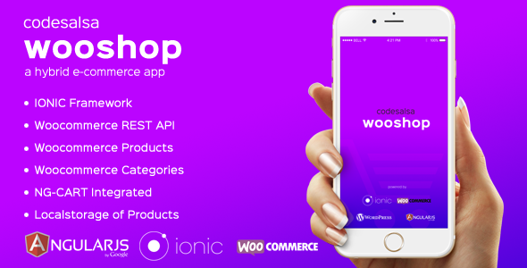
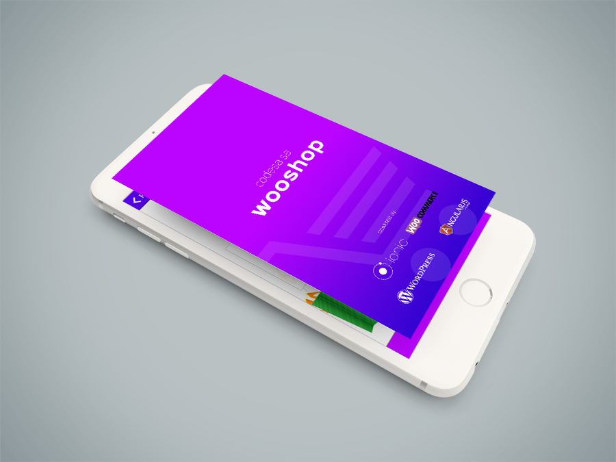
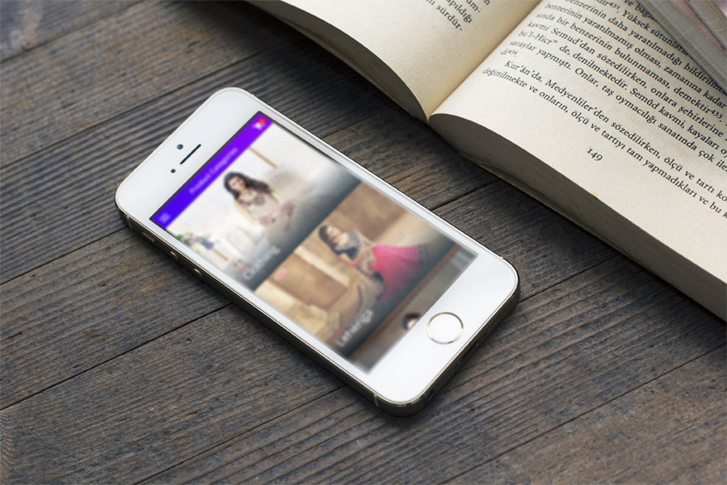
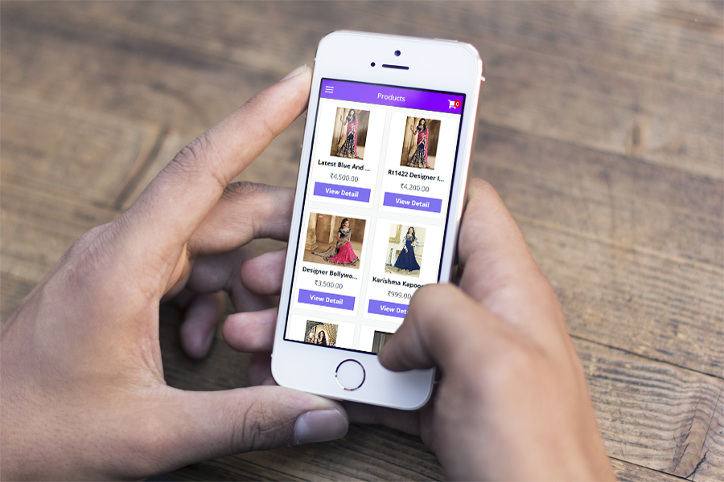
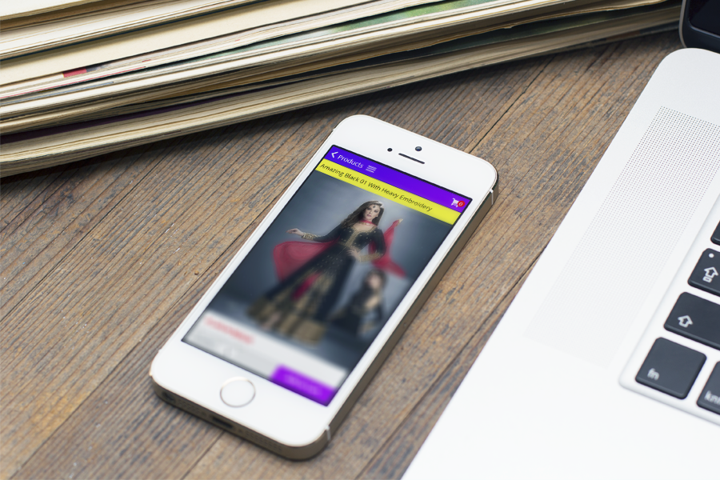
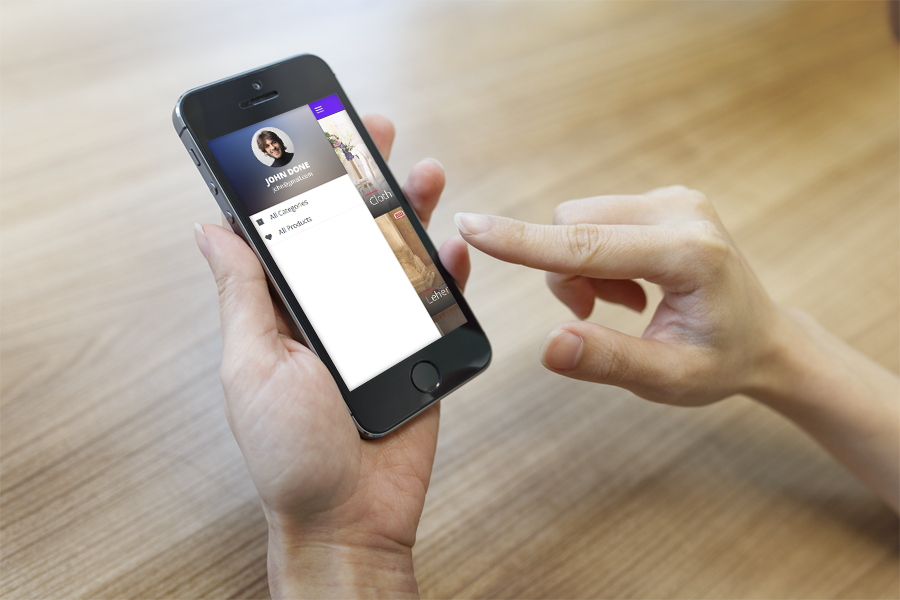
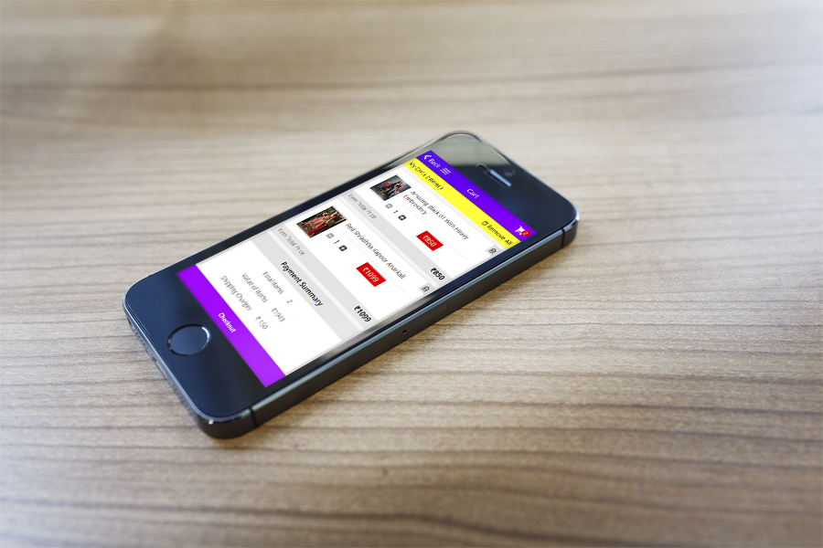
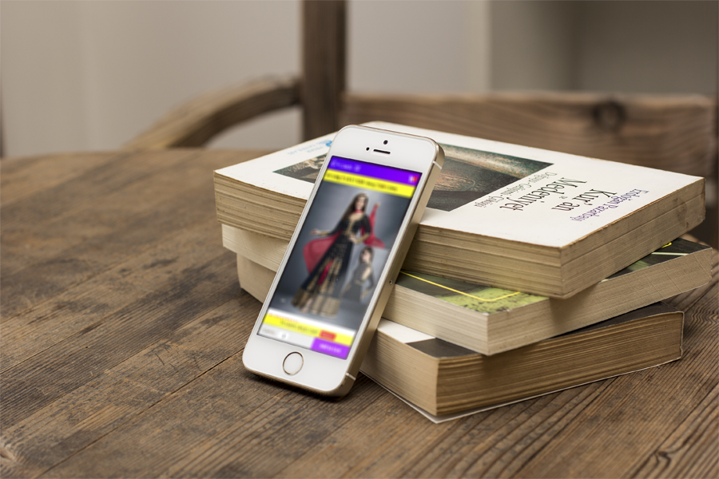
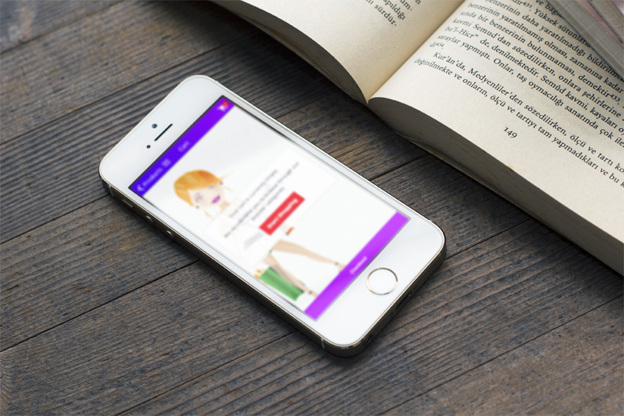

Thank you for your Interest in Codesalsa Wooshop Starter, a Phonegap based Hybrid E-commerce App for IOS, Android platform built with AngularJS, IONIC Framework and Woocommerce REST-API. If you have already purchased this Code and have Questions then please take some time to read through this documentation and take notice of the instructions listed here, as many support related questions can be answered simply by re-reading these instructions. We will frequently update Codesalsa Wooshop Starter to add new features and fix bugs.
Note: This Codesalsa Woocommerce Starter is a purely starter base code. It doesn't contain any code related to Store checkout and User authentication. In our future release we may add these features in our Advanced Version.
Introducing Wooshop
Introduction
Codesalsa Wooshop Starter is a Phonegap based Hybrid E-commerce App for IOS, Android platform built with AngularJS, IONIC Framework and Woocommerce REST API. It is also integrated with different cordova plugins. This Hybrid Application is mainly meant for E-commerce Portals developed using Wordpress CMS platform and Woocommerce plugin.

Features
Codesalsa Wooshop Starter Hybrid E-commerce Application is mainly meant for building Mobile App for any E-commerce portals developed using Wordpress and woocommerce platform. This app is developed with several general as well as advanced features. These are:
- List All Products
- List All Product Categories
- Filter Products by Category
- Single Product View
- Add product to Cart
- Quick Shopping Cart View
- Integrated with NG-CART
- Use of Woocommerce REST API
- Localstorage product show
- Image Caching








How to Install
Installation Instruction
In this Section we will show you how to install the Ionic Framework and Cordova using npm (the Node Package Manager), Install Codesalsa Wooshop for first use, and how to Build your Application for Android or iOS.
Installing Ionic
Make sure you have an up-to-date version of Node.js installed on your system. If you don't have Node.js installed, you can install it from here.
Open a terminal window (Mac) or a command window (Windows), and install Cordova and Ionic:
- npm install -g cordova ionic
On a Mac, you may have to use sudo depending on your system configuration:
- sudo npm install -g cordova ionic
If you already have Cordova and Ionic installed on your computer, make sure you update to the latest version:
- npm update -g cordova ionic
or
- sudo npm update -g cordova ionic
Installing Codesalsa Wooshop
After you have Installed all the Prerequites, you can now start by creating a Sidemenu App. To do so, run this Command from your command prompt.
- ionic start [Your App Name] sidemenu
This will create a folder named as you entered with a Sidemenu application inside. Afterwards, just replace the www folder with the one of the www folders from the wooshop-starter package. This will create the wooshop-starter App.
Now to test your application in the browser, go to the wooshop-starter folder that Ionic just created for you and run this command.
- ionic serve
Now your App is installed with Ionic platform. Next step is to setup your woocommerce store ready with some products and categories.
To install and setup woocommerce on your wordpress site, we recommend to follow this step-by-step guide provided by Woothemes.
- https://docs.woothemes.com/document/installing-uninstalling-woocommerce/
Once you are ready with your Woocommerce store setup and published some products with thumbnail images and created some categories with category images, now its time to fetch the Woocommerce store data into our Codesalsa Wooshop app. But before that, make sure your web-store is already enabled with Woocommerce Rest API (It comes default with woocommerce installation in woocommerce settings).
Now we need one more PHP api file to be uploaded to the root directory of our woocommerce store. Download and upload PHP wrapper for the WooCommerce REST API to your root directory where your wordpress core files are located
- https://github.com/kloon/WooCommerce-REST-API-Client-Library
Also for reference, we have included the mobileAPI directory along with the wooshop source codes. You just need to enter your store configuration details in API.php file.
- $client = new WC_API_Client( 'YOUR_WOOCOMMERCE_STORE_URL',
'YOUR_WOOCOMMERCE_CONSUMER_KEY',
'YOUR_WOOCOMMERCE_CONSUMER_SECRET', $options );
You can also follow this wootheme's guide on Enabling Woocommerce Rest API.
- https://docs.woothemes.com/document/woocommerce-rest-api/
Note: We always insist on using the PHP Rest API files (mobileAPI) provided with Wooshop source files, as the API is bit modified based on the theme structure we are managing.
Now, as we are ready with our own Woocommerce stores with the PHP Rest API for Woocommerce, its time to setup the Codesalsa Wooshop code to work with our store and PHP API.
Open the www directory within wooshop directory. Now open the js directory and edit the settings.js file with your favourite code editor
In settings.js file, at line No. 3 change the YOUR_WOOCOMMERCE_STORE_URL with your actual store url.
- https://crossorigin.me/http://YOUR_WOOCOMMERCE_STORE_URL/mobileAPI
On line no. 5, change the tax_rate to your desired percentage.
On ine no. 7, change the shipping_charge to your desired shipping charge.
That's it. Now your app is ready to talk with your Woocommerce store API and ready to be published to respective app stores.
Building Your App
Building for iOS
You need the iOS SDK installed on your computer to build an iOS version of your application using the steps below.
On the command line, make sure you are in the /wooshop directory.
Add support for the iOS platform:
- ionic platform add ios
Build the project:
- ionic build ios
Open conference.xcodeproj in the wooshop/platforms/ios directory
In Xcode, run the application on a device connected to your computer or in the iOS emulator
Building for Android
You need the Android SDK installed on your computer to build an Android version of your application using the steps below.
Make sure the Android SDK and the ant build tool are available on your system. The Android SDK is available here. Both the android and ant tools must be available in your path. To test your configuration, you should be able to execute both android and ant from the command line.
On the command line, make sure you are in the wooshop/ directory
Add support for the Android platform:
- ionic platform add android
Build the project:
- ionic build android
The project is built in the wooshop/platforms/android folder
To build and run the application on an Android device connected to your computer using a USB cable:
- ionic run android
To build and run the application in the Android emulator:
- ionic emulate android
Additional Resources
Splash Screens and App Icons
The Wooshop code base also contain some additional resources in the type of Splash Screen and App Icons. You can find the resources at : wooshop/resources directory.

Changelog
Version 1.0 - 01 January 2016
Sources & Credits
Codesalsa Wooshop Starter is using the following sources of plugins / files in the app. A great thanks to them who have invested their time and effort to contribute these plugins / files to the open-source community
Support
Once again thank you so much for purchasing the code. We Team Codesalsa is always ready to help you out in any critical situation. No guarantees, but We will do our best to assist. If you have a more general question related to the code, you might consider reaching us at : Support@codesalsa.net.
We will try our best to assist with questions directly related to the Application, however please note that code support is completely voluntary. Therefore before you contact me, please consider finding an answer to your question in:
- The relevant section of the documentation
- StackOverflow
- Google for general questions
In any case, if you need any custom development, app customization, code integration, IOS / Android app build etc. you can drop us an email at : support@codesalsa.net.